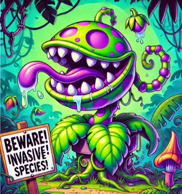
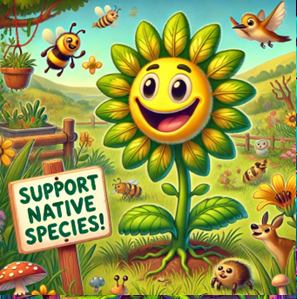
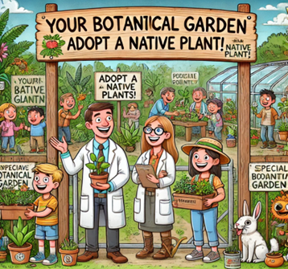

Non-Native species
Invasive species are non-native organisms that spread rapidly in new environments, often causing harm to local ecosystems, economies, and even human health. These species, whether plants, animals, or microorganisms, outcompete native species for resources, disrupt food chains, and alter habitats. Invasive species are often introduced through global trade, travel, and accidental releases. Controlling their spread is challenging and costly, making prevention and early detection key strategies in protecting biodiversity and maintaining ecological balance.

Native species
Native flora plays a crucial role in maintaining the health and stability of ecosystems. These plants have evolved alongside local wildlife, creating balanced relationships that support pollinators, herbivores, and other organisms. Native species help prevent soil erosion, regulate water cycles, and contribute to biodiversity by providing food and shelter for various animals. They are also more adapted to local climates and soil conditions, making them more resilient and requiring less maintenance than non-native species. Protecting native flora is essential for preserving ecological integrity, supporting agriculture, and maintaining the natural beauty of landscapes.

Join us in growing a greener future—one plant at a time!
Your Botanical Garden is an innovative eco-tourism project that invites visitors to actively participate in the cultivation and preservation of native plant species. This initiative allows tourists to adopt and care for indigenous flora, contributing to local conservation efforts while enjoying a hands-on experience in nature. Visitors can choose from a variety of native plants, learn sustainable gardening techniques, and understand the vital role of these species in maintaining biodiversity. Expert botanists guide participants through the process, sharing knowledge about local ecosystems and the importance of preserving native flora. Beyond cultivation, Your Botanical Garden offers guided tours, workshops, and relaxation areas where guests can immerse themselves in the beauty of the landscape